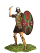
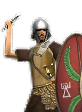

RTR: Imperium Surrectum
RTR: Imperium SurrectumCarthaginian Thureophoroi


Class: spearmen · Category: infantry · Men per unit: 40
Reforms: Unlocked by Xanthippos Reforms
Description
The main body of the Carthaginian infantry was made up of mercenaries and Libyan allies, but there were also Punic citizens from Carthage and its adjacent cities. The younger and less wealthy fought as infantry, many with equipment similar to Greek and Macedonian Thureophoroi. Their long, oblong shield was probably influenced by contacts with Gallic and Celtiberian mercenaries, and must have been introduced by the time of the First Punic War. It is also possible that Xanthippos of Sparta re-equipped the Carthaginian troops with the Thureos when he retrained them before the Battle of Tunis in 255 BC, but since Lakedaimon did not deploy any Thureophoroi at the time, this is rather unlikely.
Stats
| Rank in roster | Rank in roster | Rank in roster | Rank in roster | ||||||||
|---|---|---|---|---|---|---|---|---|---|---|---|
| Men per unit | 40 | ███······· 31% | Attack | 13 | ██████···· 62% | Charge bonus | 7 | ███······· 29% | Defence | 42 | ████████·· 81% |
| · armour | 10 | ██████···· 55% | · defence skill | 27 | ████████·· 84% | · shield | 5 | ██████···· 58% | Morale | 11 | ████······ 40% |
| Discipline | Normal | Training | Trained | Recruitment cost | 1,823 dn | ████······ 39% | Upkeep per turn | 667 dn | ██████···· 58% | ||
| Turns to recruit | 2 |
Weapons
| Primary | Secondary | Primary | Secondary | Primary | Secondary | Primary | Secondary | ||||
|---|---|---|---|---|---|---|---|---|---|---|---|
| Attack | 13 | 11 | Charge bonus | 7 | 9 | Type | thrown · blade | melee · blade | Damage | piercing | piercing |
| Projectile | javelin | — | Range | 50 | — | Ammunition | 2 | — | Properties | Used just before charging into combat | Light spear (braced against cavalry charges from the front) · +8 attack against cavalry |
Defence
| Primary | Secondary | Primary | Secondary | Primary | Secondary | Primary | Secondary | ||||
|---|---|---|---|---|---|---|---|---|---|---|---|
| Total | 42 | — | Armour | 10 | — | Defence skill | 27 | — | Shield | 5 | — |
Condition and terrain
| Hit points | 1 | Ground: scrub / sand / forest / snow | 0 / -1 / -1 / -1 | Charge distance | 30 | Formations | Square |
Technical stats
| Time between blows (primary / secondary) | 2.5 s / 2.5 s | Extra fatigue in hot climates | 1 | Collision mass per man (1.0 is normal) | 1.11 | Spacing between men: close / loose | 1 × 1.2 m / 2 × 2.4 m |
| Default ranks | 5 |
In battle: Can sap · Very good stamina
Who can recruit it
A core roster unit for 2 factions, each able to raise it anywhere they hold the right building:
Exactly what a settlement must have, route by route (3)
| Building | Also requires | Building | Also requires | Building | Also requires | ||
|---|---|---|---|---|---|---|---|
| Indirect Rule | Garrison Building or Tier 1 Military Industrial Complex · Xanthippos Reforms · Tier 1 Colony | Direct Rule | Garrison Building or Tier 1 Military Industrial Complex · Xanthippos Reforms · Tier 1 Colony | Homeland | Garrison Building or Tier 1 Military Industrial Complex · Xanthippos Reforms |